FORMACIÓN ACTUAL
Universidad Nacional de Ingeniería
Ingeniería Civil · octavo ciclo, según el CV proporcionado. Formación orientada a estructuras, BIM y automatización.
PORTAFOLIO PERSONAL · UNI
Estudiante de Ingeniería Civil
Ingeniero Civil con
visión tecnológica.
Comprender los problemas. Investigar con criterio.
Construir soluciones con herramientas digitales.
02 / MI ENFOQUE
Del análisis del fenómeno
a la construcción de una solución.
Me interesa comprender los problemas de la ingeniería civil y desarrollar soluciones que integren el análisis técnico, la investigación y las herramientas digitales.
Mi formación y mis experiencias en actividades de campo, modelado BIM e investigación me han permitido explorar distintas dimensiones de la ingeniería, desde los procesos constructivos hasta el comportamiento estructural de los materiales.
Actualmente, busco profundizar en la integración de BIM, la automatización y la inteligencia artificial aplicada a la construcción, con el objetivo de contribuir al desarrollo de procesos más eficientes, decisiones mejor fundamentadas y soluciones técnicamente sólidas.
Mi enfoque es aprender desde los fundamentos, investigar con criterio y transformar los conocimientos adquiridos en proyectos que generen valor.
03 / FORMACIÓN Y TRAYECTORIA
Formación académica, investigación
y experiencia complementaria.
FORMACIÓN ACTUAL
Ingeniería Civil · octavo ciclo, según el CV proporcionado. Formación orientada a estructuras, BIM y automatización.
2025 — EN CURSO
Participación en proyectos sobre respuesta sísmica y concreto ligero estructural. Desarrollo de un algoritmo de identificación de parámetros estructurales en el Semillero GADEST.
2026-1 · EXPERIENCIA COMPLEMENTARIA
Visitas de obra: interpretación de planos, observación y verificación de dimensiones y recubrimientos. Edición de video técnico en Filmora sobre procesos constructivos.
FORMACIÓN EN CURSO
Capacitación en Revit, Dynamo, Python e IA. Becario de la segunda generación de AI Talent de AECODE, según el CV.
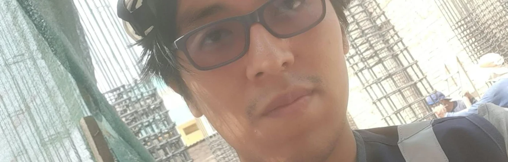
Curiosidad para aprender. Compromiso con el equipo. Criterio para investigar.
Aprender también es recorrer, observar y encontrar nuevas preguntas.
04 / TRABAJOS DESTACABLES EN CURSOS
Propuesta de rediseño arquitectónico, desde el análisis de parámetros urbanísticos y edificatorios hasta el modelado arquitectónico y estructural. El equipo organizó el intercambio de información en un Entorno Común de Datos (CDE) de Trimble Connect, con revisión de entregables semanales.
Conectar las decisiones de diseño con un modelo coordinado y documentación clara para el equipo.
DEL PROYECTO A LA PRÁCTICA
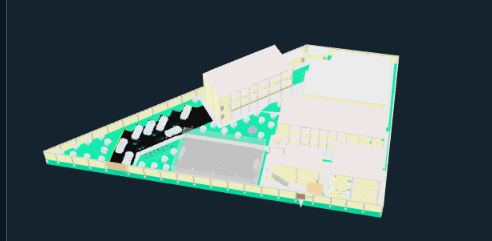
Del modelo a los planos.
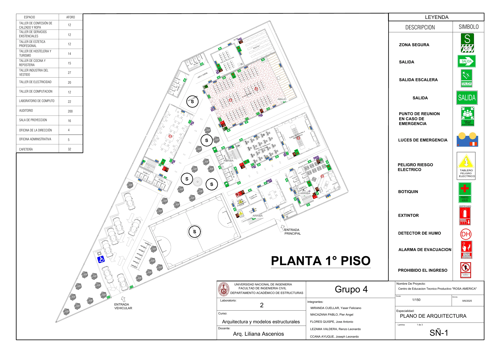
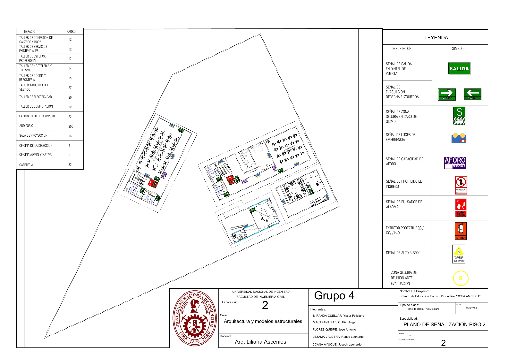
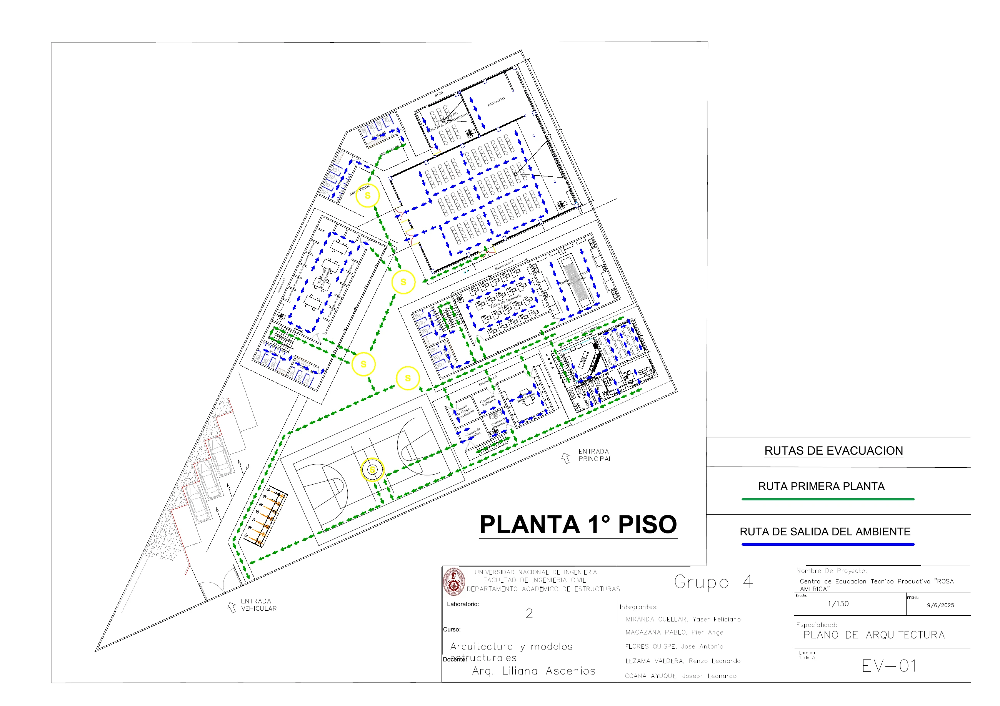
05 / TRABAJOS DESTACABLES EN CURSOS
Modelo estructural de una vivienda multifamiliar de dos niveles mediante Autodesk Revit. Aplicamos metodología BIM para revisar planos, identificar inconsistencias geométricas e interferencias, cuantificar partidas y preparar el presupuesto y la documentación técnica.
Integrar el trabajo del equipo en un modelo estructural consistente y vincularlo con metrados, costos y documentación.
DEL PROYECTO A LA PRÁCTICA
Una estructura, un modelo coordinado.
Lectura, inconsistencias y criterios de modelado.
Elementos, coordinación e integración del equipo.
Organización de planos y detalles del proyecto.
Cuantificación de partidas y análisis de costos.
Visualización 3D y láminas del modelo · próximamente.
06 / PROYECTOS ACADÉMICOS Y DE INVESTIGACIÓN
Evaluación experimental del efecto dinámico de masas de agua en azotea sobre la respuesta sísmica de edificaciones multifamiliares. El proyecto comparó un modelo físico sometido a excitación en mesa vibradora bajo distintas condiciones de carga.
Apoyar la preparación experimental y comunicar el trabajo del equipo con información organizada.
DEL PROYECTO A LA PRÁCTICA
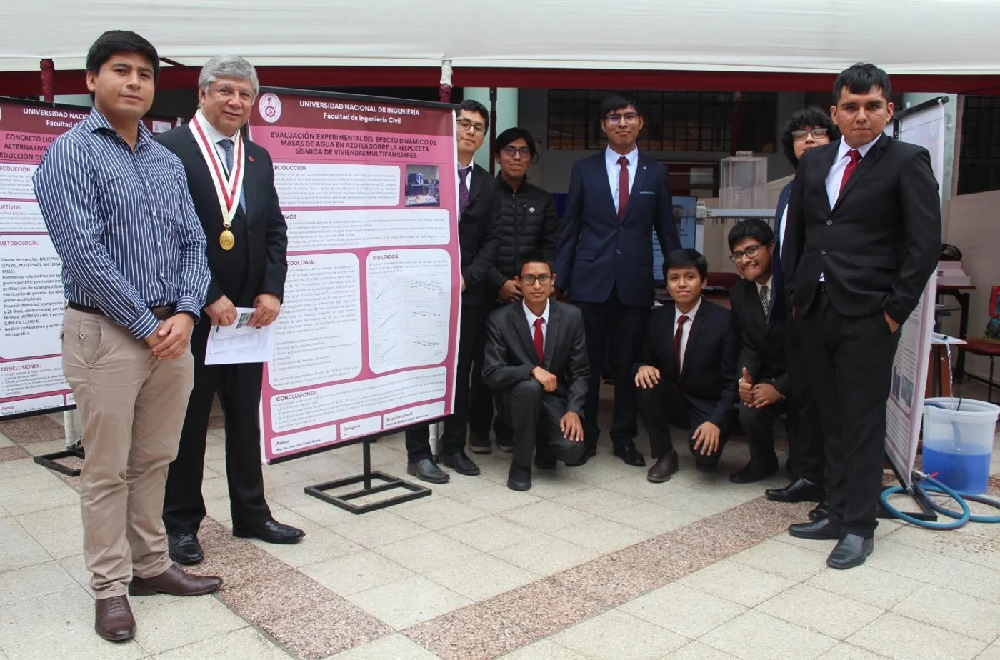
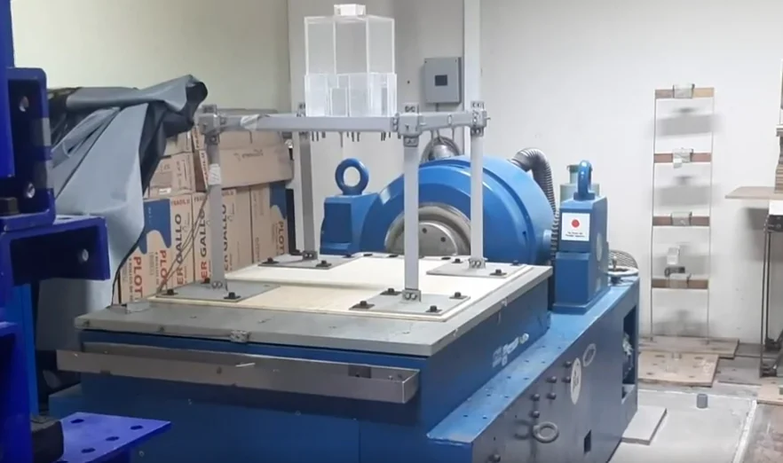
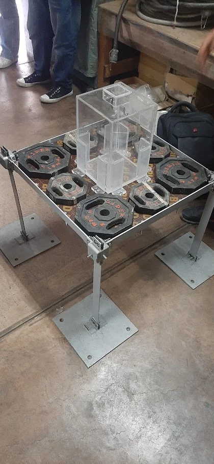
07 / PROYECTOS ACADÉMICOS Y DE INVESTIGACIÓN
Evaluación de la influencia de fibras de alta ductilidad y microperlas de EPS en el módulo de rotura y la resistencia residual del concreto ligero estructural. Estudiamos distintas dosificaciones mediante compresión y flexión, incluyendo el comportamiento postfisuración con curvas Carga–CMOD.
Contribuir al proceso experimental, desde la disponibilidad de materiales hasta la interpretación del comportamiento mecánico.
DEL PROYECTO A LA PRÁCTICA
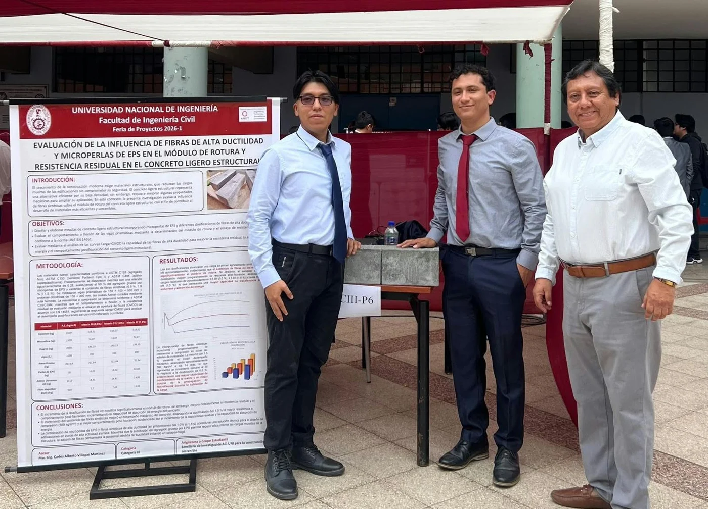
08 / INVESTIGACIÓN APLICADA · AUTOMATIZACIÓN E IA
Proyecto colaborativo para explorar la evaluación preliminar de alternativas estructurales mediante aprendizaje automático y un bot de Telegram. El flujo conecta captura de datos, servicios de cálculo y generación de informes; la revisión técnica del ingeniero sigue siendo parte del proceso.
Convertir los datos que escribe el usuario en una entrada ordenada y verificable, y coordinar el recorrido desde la conversación hasta el informe.
DEL PROYECTO A LA PRÁCTICA
Mi frente: bot, validación y coordinación. El equipo desarrolló los componentes de datos, aprendizaje automático y verificación estructural. La grabación documenta una demostración; no acredita validación para uso profesional.
La grabación recorre la configuración del bot, los tres flujos de n8n, la conexión con una API Python, la captura de parámetros estructurales en Telegram y la entrega de un informe PDF con un caso sintético.
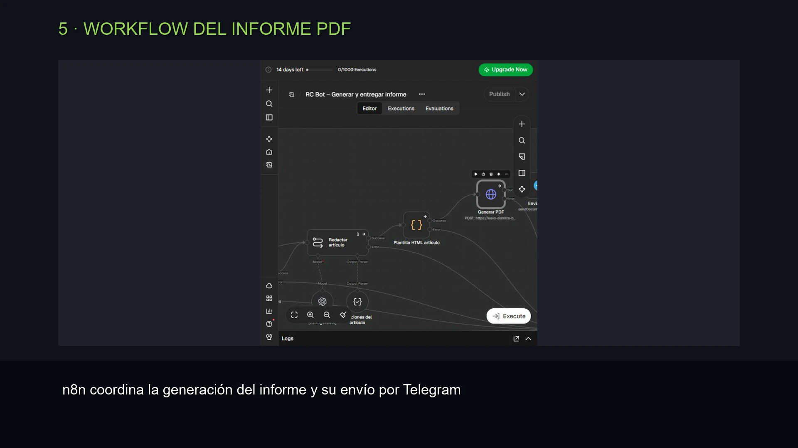
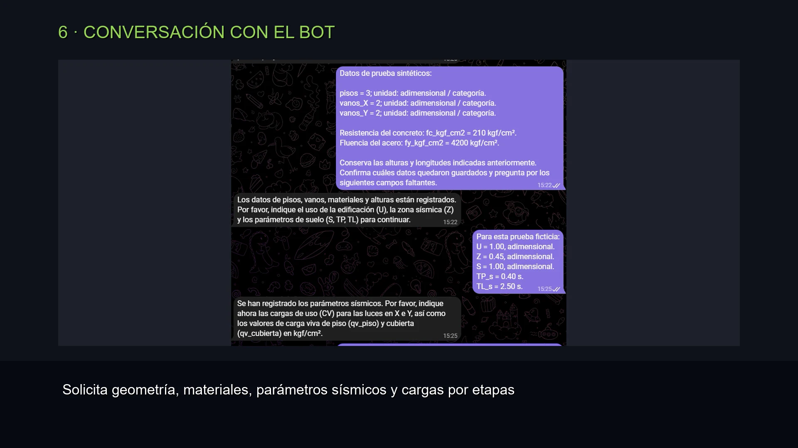
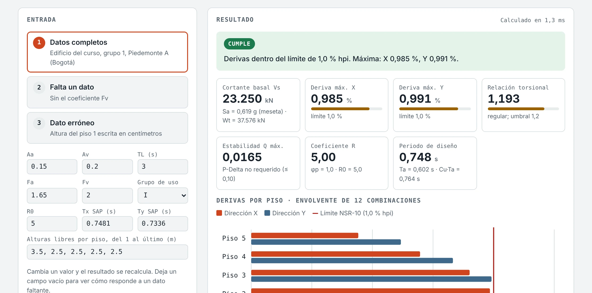
09 / DESARROLLO DIGITAL
Exploración de una aplicación para organizar información y procesos de obra mediante una interfaz web. El repositorio público permite consultar el desarrollo del frontend.
DEL PROYECTO A LA PRÁCTICA
Desarrollo en evolución. No se atribuyen resultados de implementación en obra ni ahorros sin mediciones.
Del proceso de obra a la interfaz.
10 / INVESTIGACIÓN EN DESARROLLO
Investigar también es formular mejores preguntas.
En el Semillero GADEST desarrollo un algoritmo de identificación de parámetros estructurales para el monitoreo de salud estructural.
Esta línea conecta mi interés en el comportamiento dinámico con el procesamiento de información y la programación. Se encuentra en desarrollo; todavía no presento métricas de precisión ni validación experimental del algoritmo.
Identificación de parámetros para monitoreo de salud estructural.
11 / HABILIDADES Y HERRAMIENTAS
Experiencia académica, formación e intereses
se presentan por separado.
Cada herramienta se vincula al nivel de experiencia que puedo sustentar.
12 / OBJETIVOS PROFESIONALES
Primero, comprender el fenómeno;
después, transformar ese conocimiento
en soluciones que construyan el futuro.
Conectar modelo, documentación y ejecución con información consistente.
Contrastar hipótesis, documentar métodos y comunicar los límites de cada resultado.
Explorar soluciones digitales útiles y técnicamente verificables para la construcción.
13 / VISITAS A OBRA Y EXPERIENCIA PRÁCTICA
Observar, registrar y conectar
la documentación con la ejecución.
Interpretación de planos y observación de dimensiones, recubrimientos y procesos constructivos. Registro y edición de material técnico en Filmora.
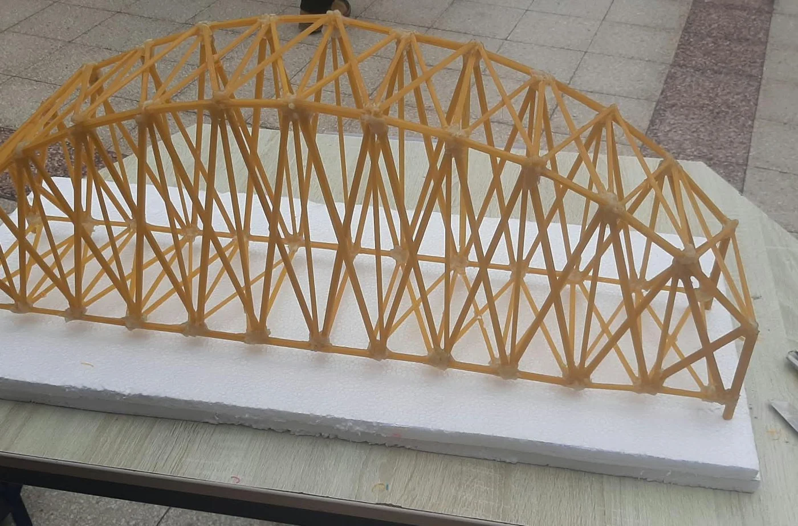
Construcción de un puente de fideos tipo arco para la selección interna rumbo al concurso del CONEIC. Integración de elementos y trabajo sobre su configuración geométrica.
14 / CONECTEMOS
Me interesa aprender, colaborar y participar en oportunidades
que conecten ingeniería civil, investigación y tecnología.